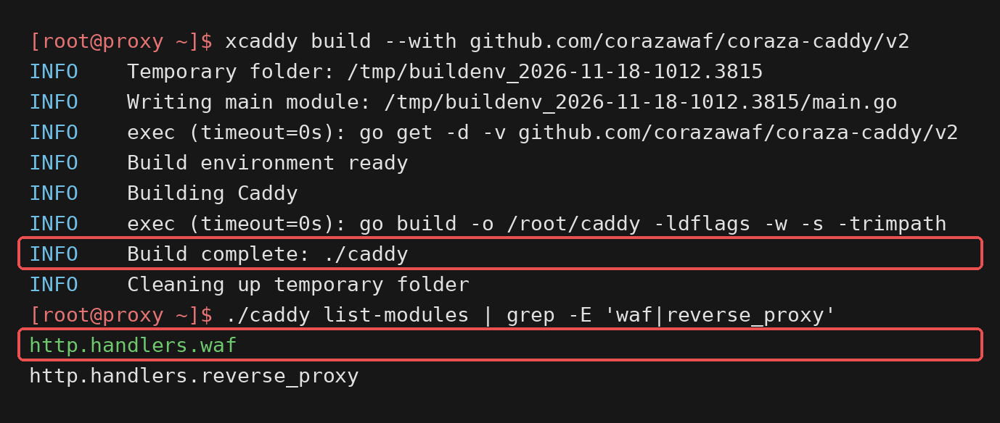
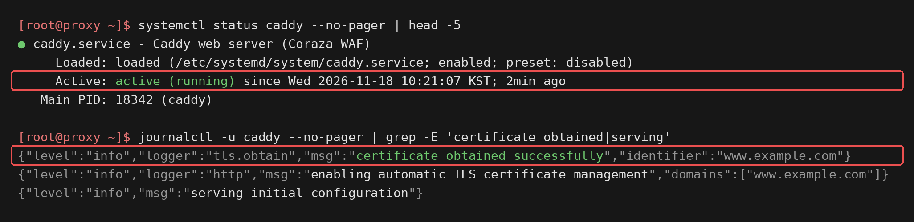
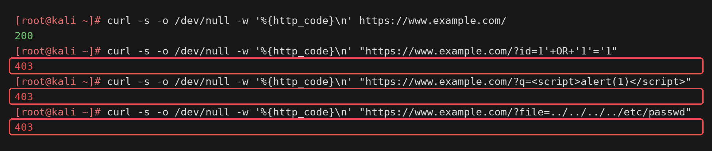
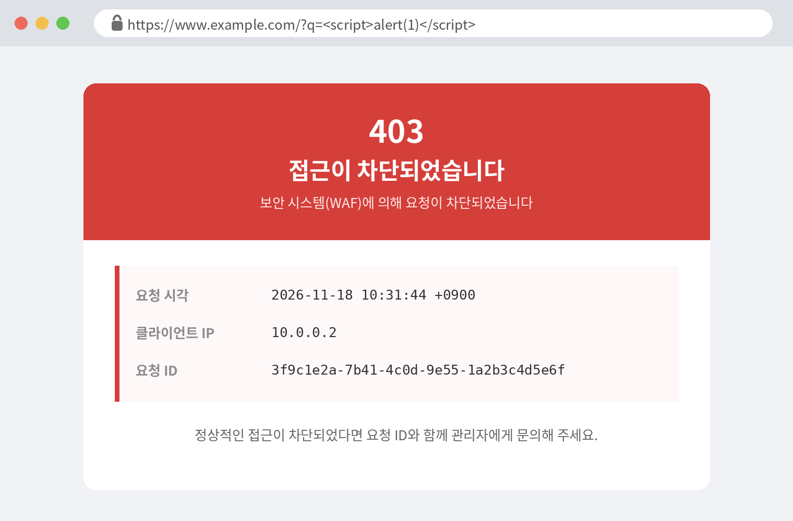
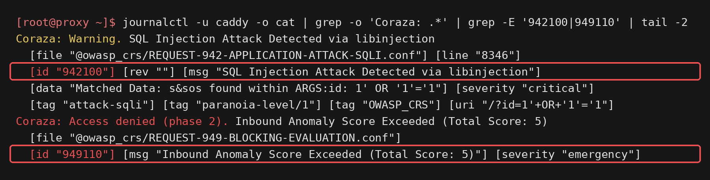

보안 점검·하드닝
Coraza + Caddy WAF 구성 (ModSecurity 대안)
ModSecurity의 상용 지원이 끝난 뒤 대안으로 꼽히는 OWASP Coraza와, 인증서를 자동으로 관리하는 Caddy를 묶어 HTTPS·리버스 프록시·WAF를 한 바이너리로 구성하는 방법입니다.
1. 왜 Coraza + Caddy인가
ModSecurity를 둘러싼 변화
| 시점 | 내용 |
|---|---|
| 2021-08-01 | ModSecurity를 관리하던 Trustwave가 상용 지원 판매 종료(EOS) |
| 2024-03-31 | NGINX가 같은 이유로 자사 ModSecurity WAF 제품 단종 |
| 2024-07-01 | Trustwave의 ModSecurity 지원 종료(EOL) |
| 이후 | ModSecurity 관리권이 OWASP로 이전되어 프로젝트는 유지 |
ModSecurity가 사라진 것은 아니지만, 룰셋(OWASP CRS)을 만드는 쪽이 ModSecurity를 계속 지원하면서도 다음 엔진으로 Coraza에 무게를 두고 있습니다. 새로 구성하는 환경이라면 대안을 검토할 시점입니다.
각 구성 요소
- Coraza: Go로 작성된 OWASP 오픈소스 WAF 엔진입니다. ModSecurity의
SecRule문법과 OWASP CRS를 그대로 쓸 수 있습니다. - Caddy: Go로 작성된 웹 서버입니다. 도메인만 적으면 Let's Encrypt 인증서 발급·갱신을 자동으로 처리합니다.
- coraza-caddy: Coraza를 Caddy의 미들웨어로 넣는 공식 모듈입니다. Caddy 바이너리 하나에 HTTPS·리버스 프록시·WAF가 모두 들어갑니다.
기존 구성과 비교
| 구분 | Apache + ModSecurity | Caddy + Coraza |
|---|---|---|
| 인증서 | certbot + cron 갱신 | 자동 발급·갱신 |
| 리버스 프록시 | mod_proxy, VirtualHost, ProxyPass | reverse_proxy 블록 |
| 로드밸런싱·헬스체크 | mod_proxy_balancer + mod_proxy_hcheck | reverse_proxy 내장 |
| WAF 룰 | ModSecurity v2 + CRS 3.x | 같은 SecRule 문법 + CRS 4.x |
| 설치 | dnf 패키지 | 직접 빌드(xcaddy) 또는 컨테이너 |
| 참고 자료 | 20년 이상 누적, 매우 많음 | 상대적으로 적음 |
2. 구성도
WEB 서버는 그대로 두고 앞단 PROXY만 Caddy + Coraza로 바꾸는 구성입니다. 애플리케이션은 수정하지 않습니다.
변경 전: 클라이언트 → [PROXY: httpd + mod_ssl + mod_proxy + ModSecurity + certbot] → [WEB1/WEB2: httpd + php-fpm]
변경 후: 클라이언트 → [PROXY: Caddy + Coraza (단일 바이너리)] → [WEB1/WEB2: 그대로]3. 설치 (Rocky Linux 9)
Coraza 모듈을 넣은 Caddy 빌드
coraza-caddy는 Caddy에 컴파일해 넣는 방식이라 xcaddy로 직접 빌드합니다. 배포판의 Go가 오래되어 빌드가 실패하면 go.dev에서 최신 Go를 받아 씁니다.
dnf install -y golang git
go install github.com/caddyserver/xcaddy/cmd/xcaddy@latest
export PATH=$PATH:$(go env GOPATH)/bin
xcaddy build --with github.com/corazawaf/coraza-caddy/v2
./caddy list-modules | grep waf # http.handlers.waf 가 보이면 성공
설치 및 서비스 등록
install -m 755 caddy /usr/local/bin/caddy
restorecon -v /usr/local/bin/caddy
useradd --system --home-dir /var/lib/caddy --shell /sbin/nologin caddy
mkdir -p /etc/caddy/coraza /var/lib/caddy /var/log/caddy
chown -R caddy:caddy /var/lib/caddy /var/log/caddy# /etc/systemd/system/caddy.service
[Unit]
Description=Caddy web server (Coraza WAF)
After=network-online.target
Wants=network-online.target
[Service]
Type=notify
User=caddy
Group=caddy
ExecStart=/usr/local/bin/caddy run --environ --config /etc/caddy/Caddyfile
ExecReload=/usr/local/bin/caddy reload --config /etc/caddy/Caddyfile --force
TimeoutStopSec=5s
LimitNOFILE=1048576
PrivateTmp=true
ProtectSystem=full
AmbientCapabilities=CAP_NET_BIND_SERVICE
[Install]
WantedBy=multi-user.targetfirewall-cmd --permanent --add-service={http,https}
firewall-cmd --reload4. Caddyfile
Apache에서 VirtualHost·SSL·프록시·밸런서·ModSecurity로 나뉘어 있던 설정이 한 파일에 들어갑니다.
# /etc/caddy/Caddyfile
{
order coraza_waf first # WAF 가 가장 먼저 요청을 검사하도록 (필수)
email admin@example.com # Let's Encrypt 계정
}
www.example.com {
# ── WAF: Coraza + OWASP CRS (모듈에 내장된 CRS 사용) ─────────────
coraza_waf {
load_owasp_crs
directives `
Include @coraza.conf-recommended
Include @crs-setup.conf.example
Include @owasp_crs/*.conf
Include /etc/caddy/coraza/*.conf
SecRuleEngine On
SecAuditEngine RelevantOnly
SecAuditLogParts ABIJDEFHZ
SecAuditLog /var/log/caddy/coraza_audit.log
`
}
# ── 리버스 프록시 + 로드밸런싱 + 헬스체크 ─────────────────────────
reverse_proxy https://web1.example.com https://web2.example.com {
lb_policy round_robin
health_uri /health.php
health_interval 10s
health_fails 3
health_passes 2
header_up Host {upstream_hostport}
header_up X-Real-IP {client_ip}
transport http {
# WEB 서버 사설 CA 로 인증서 검증 (재암호화 구간)
tls_trusted_ca_certs /etc/caddy/web-ca-bundle.crt
}
}
# ── WAF 차단 시 안내 페이지 ───────────────────────────────────────
handle_errors {
@waf expression `{err.status_code} == 403`
handle @waf {
header Content-Type "text/html; charset=utf-8"
respond `<!DOCTYPE html><html lang="ko"><meta charset="UTF-8">
<title>접근이 차단되었습니다</title>
<h1>403 접근이 차단되었습니다</h1>
<p>보안 시스템(WAF)에 의해 요청이 차단되었습니다</p>
<p>요청 시각: {time.now}<br>클라이언트 IP: {client_ip}<br>요청 ID: {http.request.uuid}</p>
<p>정상적인 접근이 차단되었다면 요청 ID와 함께 관리자에게 문의해 주세요.</p></html>` 403
}
}
log {
output file /var/log/caddy/access.log
}
}• 인증서 관련 설정이 없습니다. 도메인 이름만으로 자동 발급되며, 인증서는
/var/lib/caddy에 저장됩니다.• 클라이언트가 보낸
X-Forwarded-For는 기본적으로 신뢰하지 않고, Caddy가 실제 접속 IP로 새로 붙입니다.• 차단 페이지는 Apache의
ErrorDocument + REDIRECT_* 환경변수 방식 대신 handle_errors와 플레이스홀더로 만듭니다.
caddy validate --config /etc/caddy/Caddyfile
systemctl daemon-reload
systemctl enable --now caddy
5. 예외 처리 (화이트리스트)
예외 룰은 ModSecurity와 같은 문법으로 /etc/caddy/coraza/에 두면 Caddyfile의 Include로 읽힙니다.
# /etc/caddy/coraza/10-whitelist.conf
# 예외 룰 id 는 9000번대 (CRS 와 충돌 방지)
# 특정 경로에서 SQLi 룰 하나만 예외
SecRule REQUEST_URI "@beginsWith /admin/" \
"id:9003,phase:1,pass,nolog,ctl:ruleRemoveById=942100"
# 특정 파라미터의 오탐만 예외
SecRule REQUEST_URI "@streq /search" \
"id:9004,phase:1,pass,nolog,ctl:ruleRemoveTargetById=941100;ARGS:search"CRS 3.x에서 4.x로 바뀌면서 일부 룰 ID와 설정 방식이 달라졌습니다. 기존 ModSecurity 예외 룰은 그대로 복사하지 말고, 새 환경에서 차단 로그를 보며 하나씩 다시 맞춥니다.
6. 차단 테스트
# 별도 테스트 PC 에서
curl -s -o /dev/null -w '%{http_code}\n' https://www.example.com/ # 200
curl -s -o /dev/null -w '%{http_code}\n' "https://www.example.com/?id=1'+OR+'1'='1" # 403 SQLi
curl -s -o /dev/null -w '%{http_code}\n' "https://www.example.com/?q=<script>alert(1)</script>" # 403 XSS
curl -s -o /dev/null -w '%{http_code}\n' "https://www.example.com/?file=../../../../etc/passwd" # 403 Path Traversal

탐지 로그 확인
Coraza는 탐지 내용을 Caddy 로그로 남깁니다. ModSecurity와 같은 형식이라 룰 ID·메시지·매칭 데이터를 같은 방식으로 읽을 수 있습니다.
journalctl -u caddy -o cat | grep 'Coraza'
journalctl -u caddy -o cat | grep 'id "942100"' # SQLi
tail -f /var/log/caddy/coraza_audit.log # 상세 audit 로그
7. 이전 시 주의사항
| 항목 | 내용 |
|---|---|
| 차단 안내 페이지 | Apache 전용 방식(ErrorDocument, REDIRECT_* 환경변수)은 쓸 수 없어 handle_errors로 다시 만듦 |
.htaccess | Caddy는 읽지 않음. 앞단만 바꾸면 WEB 서버의 .htaccess는 그대로 동작 |
| GeoIP 국가 차단 | ModSecurity의 SecGeoLookupDb 방식이 그대로 되지 않을 수 있어 별도 Caddy 플러그인 검토 필요 |
| CRS 버전 | 3.x → 4.x 변경으로 예외 룰 재조정 필요 |
| 업데이트 | dnf가 아닌 재빌드로 업데이트하므로, 빌드 절차를 스크립트로 남겨 둠 |
운영 중인 PROXY가 두 대라면 한 대(PROXY2)만 먼저 바꾸고, 같은 요청을 양쪽에 보내 차단 결과를 비교한 뒤 나머지를 바꾸는 순서가 안전합니다.
8. 도입 판단 기준
| 상황 | 판단 |
|---|---|
| Apache + ModSecurity가 안정적으로 운영 중 | 유지 (ModSecurity는 OWASP가 계속 관리) |
| 새로 구성하는 서버, 컨테이너 환경 | Caddy + Coraza 검토 |
| DNAT(포트 포워딩)만 쓰는 구조에 WAF를 새로 넣을 때 | Caddy + Coraza가 간단 (DNAT는 HTTP를 종료하지 않아 WAF 검사 불가) |
| 패키지 관리 정책이 엄격한 환경 | 직접 빌드 부담 고려, 기존 유지 |